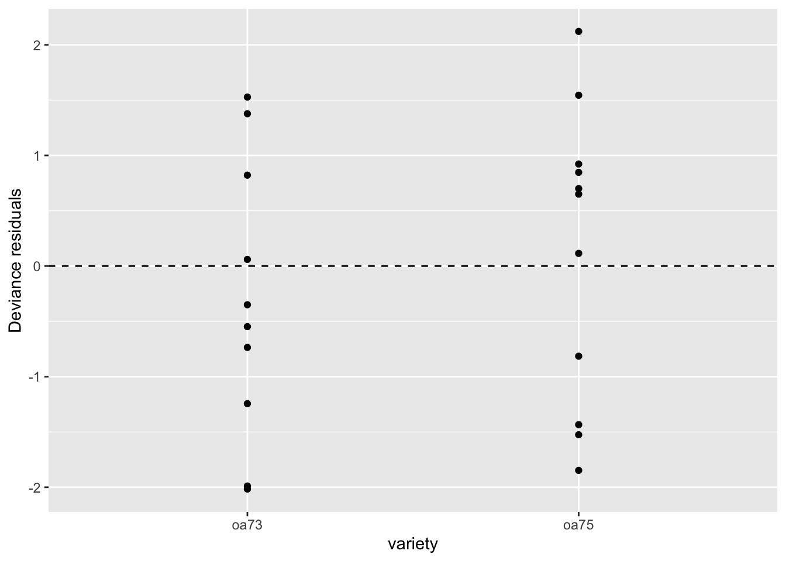

orobanche <- read.csv("https://aloy.github.io/stat230-materials/data/orobanche.csv")Binomial Logistic Regression
An R Tutorial
In this tutorial we’ll how to work with a binomial logistic regression model in R.
Data overview
Orobanche is a genus of parasitic plants without chlorophyll that grow on the roots of flowering plants. In an experiment, seeds from two varieties, Orobanche aegyptiaca 75 and Orobanche aegyptiaca 73, where brushed with extract from either a cucumber root or a bean root. Researchers recorded the number of seeds that eventually germinated.
Run the code chunk below to load the data:
The variables in the data set are:
y: count of seeds germinatedn: number of seedsvariety: either oa75 or oa73root: either cucumber or bean
Task 1. Explain why this is an example of a binomial response as opposed to a binary response.
TipSolution
In a binary response, each observation corresponds to a single trial with two possible outcomes (e.g., success or failure). In contrast, a binomial response involves multiple trials for each observation (row), where the outcome is the number of successes out of a fixed number of trials. Here, each observation records the number of seeds that germinated (y) out of the total number of seeds (n), making it a binomial response.
Task 2. Does there appear to be a relationship between the proportion of seeds that germinate and variety? What about root? To answer this,
create boxplots of the estimated proportion by each variable.
create boxplots of the estimated proportion using one variable on the x-axis and the other as the
fillcolor.
What do you learn from these plots?
TipSolution
First, we can create boxplots of the proportion germinated by variety and root:
library(ggformula)
gf_boxplot(
y/n ~ variety, data = orobanche,
ylab = "Proportion Germinated",
title = "Proportion Germinated by Variety"
)
gf_boxplot(
y/n ~ root, data = orobanche,
ylab = "Proportion Germinated",
title = "Proportion Germinated by Root"
)

From these plots, we can see that there are differences in the proportion germinated between the two varieties and between the two root types.
Next, we can create boxplots with one variable on the x-axis and the other as the fill color:
gf_boxplot(
y/n ~ variety, data = orobanche,
fill = ~root,
ylab = "Proportion Germinated",
title = "Proportion Germinated by Variety"
)
From this plot, we can observe how the interaction between variety and root affects the proportion germinated. It appears that the effect of variety on germination may differ depending on the root type, suggesting a potential interaction effect.
Additive model
To begin, let’s fit an additive logistic regression model where the main effects for variety and root are both included. Like in binary logistic regression, we use the glm() function to fit the model and specify family = binomial. The difference is in how we specify the response variable. For binomial logistics regression we specify the response as a proportion (e.g., y/n), and we need to use the weights argument to indicate the number of trials (i.e., n).
Task 3. Fill in the blanks in the below code chunk to fit the additive binomial logistic regression model:
TipSolution
oro_glm1 <- glm(y/n ~ variety + root, data = orobanche, family = binomial, weights = n)Task 4. Report the fitted equation for the linear predictor (i.e., the log-odds of germination).
TipSolution
To obtain the fitted equation, we can look at the summary of the model:
summary(oro_glm1)
Call:
glm(formula = y/n ~ variety + root, family = binomial, data = orobanche,
weights = n)
Coefficients:
Estimate Std. Error z value Pr(>|z|)
(Intercept) -0.7005 0.1507 -4.648 3.36e-06 ***
varietyoa75 0.2705 0.1547 1.748 0.0804 .
rootcucumber 1.0647 0.1442 7.383 1.55e-13 ***
---
Signif. codes: 0 '***' 0.001 '**' 0.01 '*' 0.05 '.' 0.1 ' ' 1
(Dispersion parameter for binomial family taken to be 1)
Null deviance: 98.719 on 20 degrees of freedom
Residual deviance: 39.686 on 18 degrees of freedom
AIC: 122.28
Number of Fisher Scoring iterations: 4The fitted equation for the linear predictor (log-odds of germination) can be expressed as:
\[ \text{logit}(p) = -0.7 + 0.270 \cdot \text{variety} + 1.06 \cdot \text{root} \]
Task 5. Interpret the coefficient for varietyoa75 in context.
TipSolution
The coefficient for varietyoa75 is 0.27. The odds of germination for variety oa75 are expected to be higher than the odds of germination for varietyoa73` by a factor of exp(0.270) ≈ 1.31 (or about a 31% increase), holding root constant.
Task 6. We can create plots of the Pearson or deviance residuals using the residualPlots() function from the car package and setting type = "pearson" or type = "deviance". Create deviance residual plots for the fitted model. Do you see any model deficiencies?
TipSolution
library(car)
residualPlots(oro_glm1, type = "deviance")
From the deviance residual plots, we can assess whether there are any patterns or outliers that suggest model deficiencies. If the residuals appear randomly scattered around zero without any discernible pattern, it suggests that the model fits well. However, if there are patterns, it may indicate that the model is missing important terms or interactions, or that a transformation is needed.
In this case, we see the medians of the residuals for variety are not at 0, suggesting some lack of fit. We see a similar pattern with the linear predictor.
Task 7. Perform a deviance goodness-of-fit (GOF) test. What do you conclude?
TipDeviance goodness-of-fit test
The deviance GOF test statistic is given by the residual deviance of your fitted model. Then, calculate the upper-tail area under the chi-square distribution with degrees of freedom equal to the residual degrees of freedom:
1 - pchisq(stat, df)
TipSolution
The hypotheses for the deviance GOF test are:
- \(H_0\): The model is adequate.
- \(H_a\): The model is not adequate.
To find the value of the test statistic, look at the residual deviance line of the summary output:
Residual deviance: 39.686 on 18 degrees of freedomWe find \(D=39.686\) and \(df = 18\). Now we can calculate the p-value:
1 - pchisq(39.686, 18)[1] 0.00230269The p-value is approximately 0.0023. Since the p-value is very small, we reject the null hypothesis and conclude that there is strong evidence of lack of fit in the model.
Adding an interaction term
You should have found evidence of lack of fit, so we may be missing a term (especially sinc we don’t see large outliers that would inflate the deviance GOF statistic). The only other thing we can add here is an interaction. The below code chunk updates our first model to include an interaction term.
oro_glm2 <- update(oro_glm1, . ~ . + variety:root)
TipUpdating a model in R
You can use the update() function to modify an existing model. The syntax is update(old_model, new_formula), where new_formula specifies the changes to the model formula. In this case, . ~ . + variety:root means “keep all existing terms and add the interaction between variety and root.” (The . on the left side of the ~ represents the keeping the same response variable, and the . on the right side represents all of the existing predictors.)
Task 8. Create deviance residual plots for the fitted model. Do you see any model deficiencies?
TipSolution
The residual pots for the updated model can be created as follows:
residualPlots(oro_glm2, type = "deviance")
The deviance residual plots reveal fewer issues, though we still see some deviation from zero in the medians for variety. Overall, the model appears to fit better than the previous additive model, but may still be insufficient.
One thing to note here is that the boxplots can obscure some of the individual residuals, especially if there are few data points in each group. Let’s create a scatterplot for each predictor:
aug_oro_glm2 <- broom::augment(oro_glm2, residual_type = "deviance")
gf_point(.resid ~ variety, data = aug_oro_glm2, ylab = "Deviance residuals") |>
gf_hline(yintercept = 0, linetype = 2)
gf_point(.resid ~ root, data = aug_oro_glm2, ylab = "Deviance residuals") |>
gf_hline(yintercept = 0, linetype = 2)

From these scatterplots, we can see that the residuals are more rather evenly distributed around zero for both predictors, indicating an improved fit with the interaction term included.
Task 9. Perform a deviance goodness-of-fit test. What do you conclude?
TipSolution
First, we look at the summary output for the updated model to find the residual deviance and degrees of freedom:
summary(oro_glm2)
Call:
glm(formula = y/n ~ variety + root + variety:root, family = binomial,
data = orobanche, weights = n)
Coefficients:
Estimate Std. Error z value Pr(>|z|)
(Intercept) -0.4122 0.1842 -2.238 0.0252 *
varietyoa75 -0.1459 0.2232 -0.654 0.5132
rootcucumber 0.5401 0.2498 2.162 0.0306 *
varietyoa75:rootcucumber 0.7781 0.3064 2.539 0.0111 *
---
Signif. codes: 0 '***' 0.001 '**' 0.01 '*' 0.05 '.' 0.1 ' ' 1
(Dispersion parameter for binomial family taken to be 1)
Null deviance: 98.719 on 20 degrees of freedom
Residual deviance: 33.278 on 17 degrees of freedom
AIC: 117.87
Number of Fisher Scoring iterations: 4We find \(D=33.278\) and \(df = 17\). Now we can calculate the p-value:
1 - pchisq(33.278, 17)[1] 0.01039118The p-value is approximately 0.01. Since the p-value is still small, we reject the null hypothesis and conclude that there is still evidence of lack of fit in the model.
Function quick reference
The following table summarizes the functions discussed above:
| Function | Purpose |
|---|---|
glm() |
Fit generalized linear models, including binomial logistic regression models. |
update() |
Modify an existing model by adding or removing terms. |
residualPlots() |
Create residual plots to assess model fit. Set either type = "pearson" or type = "deviance" for binomial regression models. |
pchisq() |
Calculate cumulative probabilities for the chi-square distribution, useful for goodness-of-fit tests. |